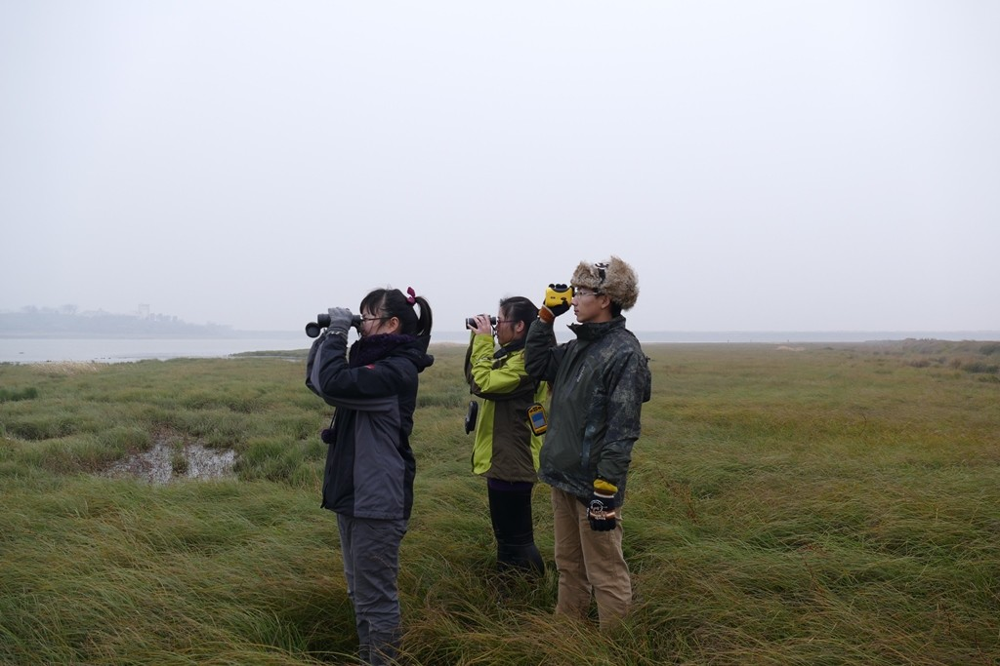

01
Biodiversity dynamics
Dynamics in distribution and stability of biodiversity
I investigate how land-use and climate change reshape species distributions, migration connectivity, phenology, community composition, and population stability across regional to continental scales.